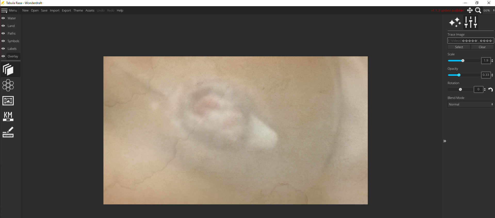
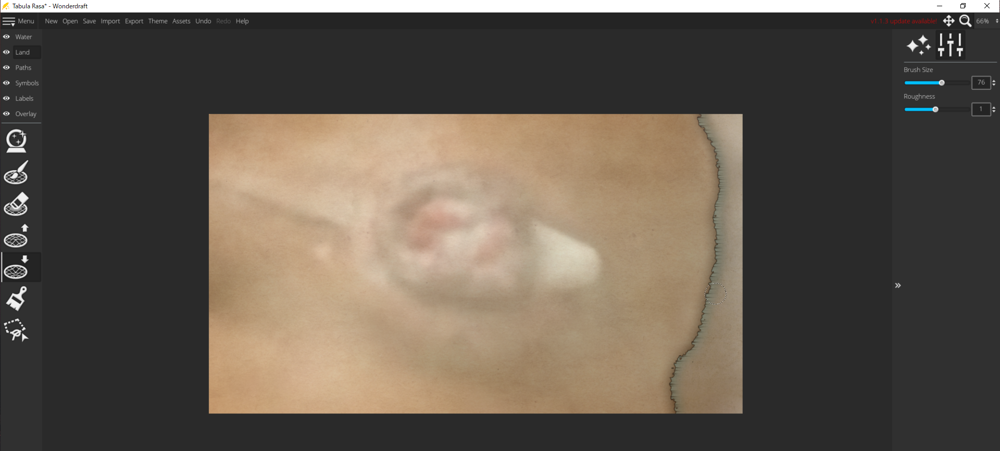
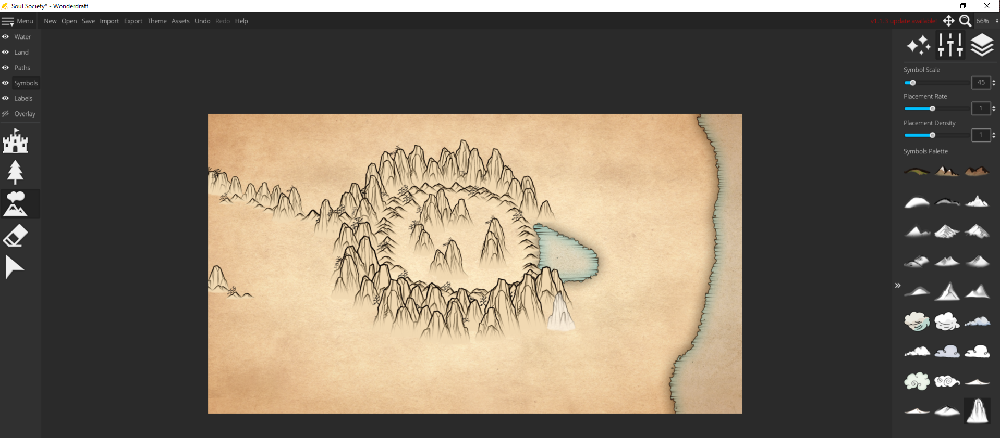
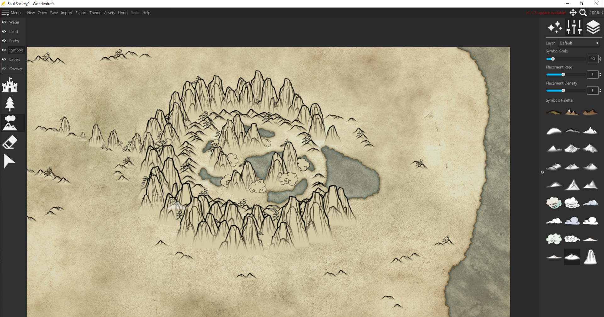
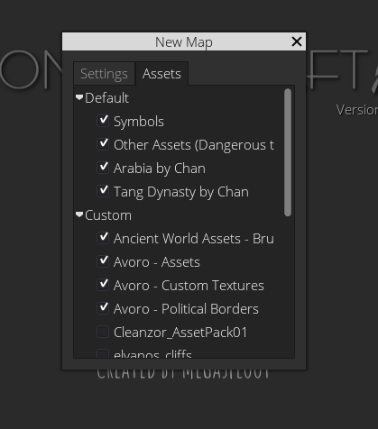

WonderDraft

公式サイト
| 価格 | $29.99 （たまに半額セールやってる） |
| 安定性 | (ただしMythkeeper周りは1) |
| UI | |
| 機能性 |
概要
TAKUYAで使った地図作成ソフト。TRPG支援ソフトとして制作されたらしく、マップがパパパっと(適当)作れるようになっている


{kind=link}
まともな作例が見たい方は r/wonderdraftに行って、どうぞ。
作成手順例
{kind=link}
元画像を読み込む
{kind=link}
元画像に沿って陸地を描く
{kind=link}
シンボルをばらまく
{kind=link}
背景テーマや色を調整。淡水ツール(海と微妙に描画方法が違う)で池を追加。

外部ソフトで編集。卍解～！
安定性：
動作はそこそこ軽く、少人数制作のソフトの割には意外と安定している。ただしAsset管理ソフトのMythkeeperはうんこ(後述)
UI：
ふつう。強いて言えば「水系ツールのアイコンが紛らわしい」とか、「シンボルのレイヤー設定が地味、Inkscape並にしょっぱい」くらい
機能性：
頻繁にアプデがある。機能が追加されることも多いのでちょっとうれしい
以下気になった点:
- 川ツールや「パス」ツールがベクター形式ではなくTDNラスターなのが難点。しかもデフォルト設定だと線が勝手にくねくね曲がるのが少しムカつく。川はまだいいとして、パス関連は外部ソフトで付け足すほうが楽だと思う。去年ぐらいのアプデ追加された国境・領土ツールは一応ベクター形式らしいが仕様がまだ未確定？なので様子見。
- 山林や建物などのシンボルは適当に並べてもそれっぽく見えるので便利なのだが、色の塗り方が少々きになる。シンボルに色を足すと同じ色がシンボル全体に適応されるため、地図のテクスチャが強めだったりヴィネットをかけたりしていると背景との色の違いが目立ってしまう。
- フォントが貧弱。15種類くらいしか入っておらず、当然日本語のフォントはない。
{kind=link}
まずいですよ！
Asset関連
テクスチャやテーマ、シンボルなど、ファン制作のAssetに対応している。導入も洋ゲーのMODみたいな感覚。
Assetの導入はは手動(公式フォーラム からDL、Assetsフォルダにぶち込む)でもできるが、専用ソフトを使った方が多少楽。ただしこいつの動作は非常に不安定であり、DLもクッソ遅いので、使うならご覚悟を。まぁ公式フォーラムも重いし検索もくそだし多少はね？使っているとたまに「このAssetはMythkeeperに対応していません」みたいな警告を出すことがあるが、たいてい問題なく動作するので無視していい。
{kind=link}
Assetは新規作成時に指定しないと読み込まれないので注意。
総評
絵心がなくても地図を作れるのでありがたい。多少不満はあるが、使い方が本来の使用目的から逸脱しているだけかもしれない。